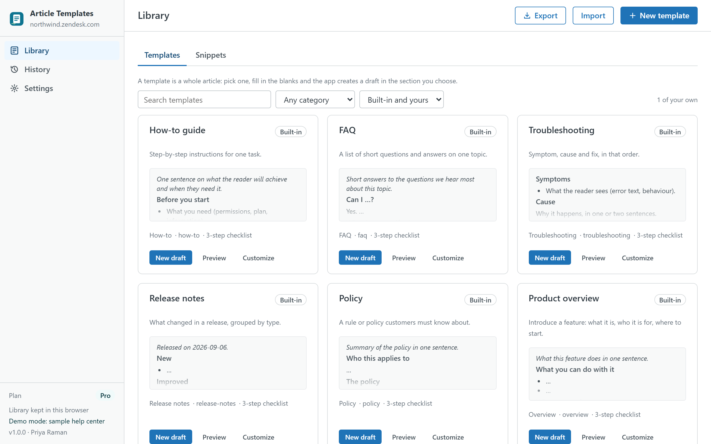
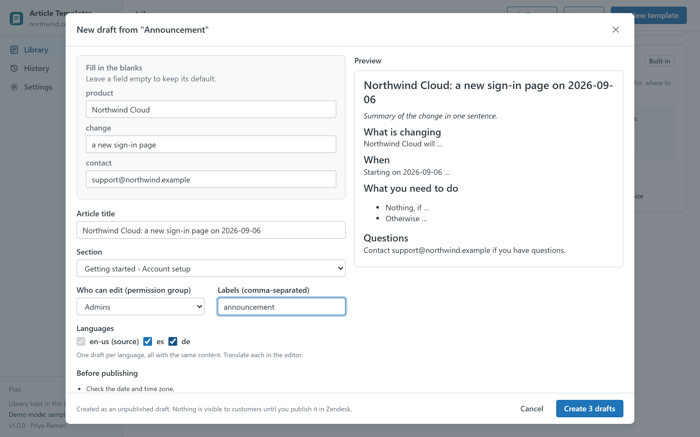

Help Center Article Templates
Stop starting every article from a blank page. Pick a template, fill in the blanks and get an unpublished draft in the right section of your help center, in one or several languages, ready to finish in the Zendesk editor. Seven templates and six snippets are built in; your own live in your browser or, on Pro, in a library shared with the whole account.

How it works
- Pick a template. How-to guide, FAQ, troubleshooting, release notes, policy, product overview, announcement, or one of your own. Each card shows a preview, its category and its publishing checklist.
- Fill in the blanks. Placeholders such as
{{product|Our product}}become fields with a default value. The article title follows them until you edit it by hand. A live preview shows the result. - Choose where. Section, permission group, labels and, on Pro, several languages at once.
- Create the draft. The app creates an unpublished draft article (plus draft translations) and links you straight to the Zendesk editor. It never publishes anything.

Your own templates and snippets
- Write templates as plain article HTML, the same markup as the Zendesk editor's source view, with a code/preview toggle.
- Insert any snippet (note, tip or warning callout, steps table, keyboard shortcuts table, contact footer) into a template with one click, or copy its HTML into an existing article.
- Add a default title, labels, a category and a publishing checklist that appears after each draft is created.
- Duplicate a built-in template with Customize and make it yours.
A library for the whole team (Pro)
An admin switches the library to Whole Zendesk account in Settings. The templates are stored as a setting of the app's own installation inside your Zendesk account, so every agent gets the same library on their next visit, with no external service and nothing to configure. Agents can also export and import the library as a JSON file.
Plans
| Free | Pro · $9 per month per account | |
|---|---|---|
| Built-in templates and snippets | ✓ | ✓ |
| Your own templates | 3 | Unlimited |
| Your own snippets | 3 | Unlimited |
| Drafts with fill-in placeholders | ✓ | ✓ |
| Draft in several languages at once | — | ✓ |
| Library shared with the whole account | — | ✓ |
| Publishing checklists | — | ✓ |
| Export and import (JSON) | — | ✓ |
| Free trial | 14 days |
Pro is billed through the Zendesk Marketplace per account, not per agent, and can be cancelled from Admin Center at any time.
Safety
- The app only ever creates drafts. Publishing stays in the Zendesk editor, with your usual review flow.
- Drafts are created with your own permissions and the permission group you choose, so nobody can create what their role does not allow.
- Agents whose role cannot edit articles can browse and copy templates but the New draft button stays off.
Privacy
The app has no server. It reads your help center's categories, sections, languages and permission groups through the Zendesk API with the signed-in agent's session, and never reads article bodies or end-user data. Your templates, the draft history and settings live in the browser's local storage on the agent's computer (or, on Pro, in the app's installation settings inside your Zendesk account) and can be cleared from Settings. Nothing is sent to the developer or to any third party; there are no analytics, cookies or AI services. The same privacy policy and terms as Help Center Doctor apply.
Install
- Open the listing on the Zendesk Marketplace (link added once the listing is approved), click Install and choose a plan. You need to be a Zendesk admin.
- Choose the roles or groups that may use the app, then click Install.
- In Zendesk Support, open Article Templates from the left navigation bar. The library is ready straight away.
Frequently asked questions
Does it publish articles? No. Every article it creates is an unpublished draft, and translations are draft translations. You publish from the Zendesk editor when the article is ready.
Can I use my existing articles as templates? Yes. Open the article's source view in the Zendesk editor, copy the HTML into a new template and replace the parts that change with placeholders such as {{customer|your company}}.
Where are shared templates stored? In a setting of the app's installation in your Zendesk account (up to about 59 KB, plenty for dozens of templates). Uninstalling the app removes it. Nothing leaves Zendesk.
Also from the same developer: Help Center Doctor finds and fixes broken links, missing images, stale content and structure problems; Help Center Find & Replace changes text, links and images across every article; Help Center Print & Export turns articles into PDF, Word, HTML, Markdown, ZIP and CSV; Help Center Link Checker is the free link checker; Proactive Outreach sends one proactive ticket per customer to a whole audience from inside Support.
Support: support@helpcenterdoctor.app, answered within one business day.